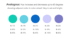
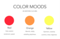
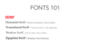

-

Color Palettes
I created a simple guide to creating color palettes.
-

Color Moods
Ever wonder what moods colors represent in the Western World? Check-out this quick guide.
-

Fonts 101
A reference guide to the basics of fonts.
-
Illustrator Shapes
A visual guide to what the different tools in Adobe Illustrator can do.